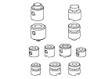
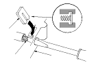

A/T Valve Body Valve Installation
Coat all parts with ATF before assembly.
Install the valves and springs in the sequence shown for the main valve body
,
regulator valve body
, and
servo body
. Refer to the following valve cap illustrations, and install each valve cap so the end shown facing up will be facing the outside of the valve body.

Install all the springs and seats. Insert the spring (A) in the valve, then install the valve in the valve body (B). Push the spring in with a screwdriver, then install the spring seat (C).
